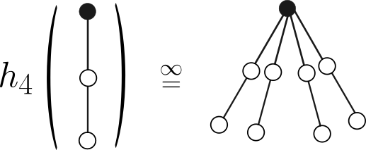

1. Fourier analysis of iterative algorithms
with Chris Jones
We introduce a new approach for analyzing a broad
class of nonlinear iterative algorithms on random
matrices using Fourier analysis. As the dimension of the input matrix
goes to infinity, the Fourier basis simplifies, enabling us to implement
heuristic cavity-based reasoning into rigorous arguments.